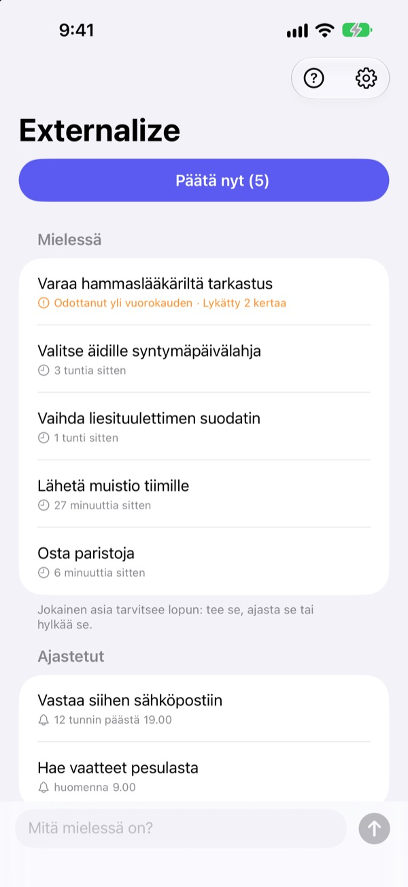
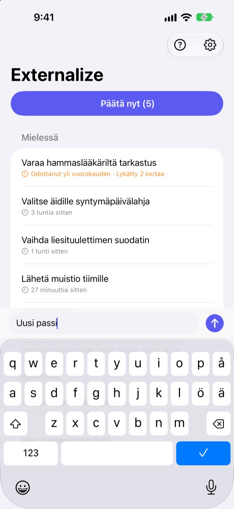
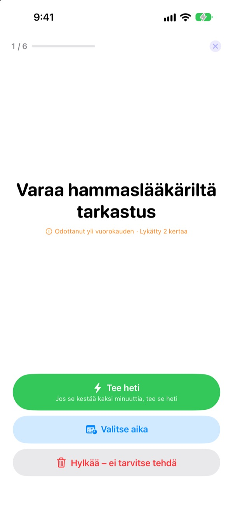
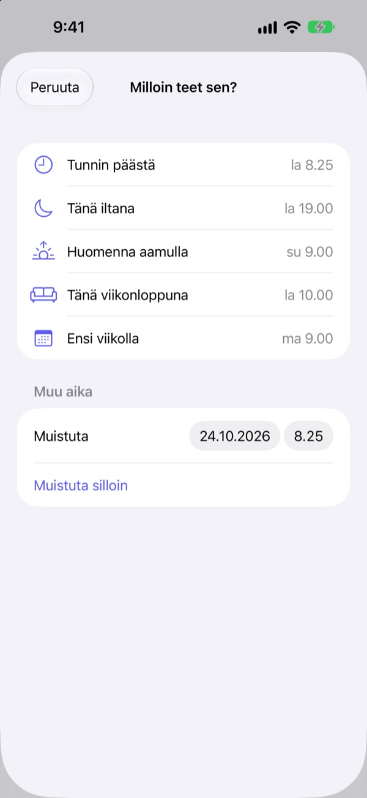

Kirjaa nyt.
Päätä illalla.
”Ai niin, minun pitää vielä…” Saa se pois päästä parilla sanalla ja päästä irti. Illalla hoidat jäljelle jääneet, yksi kerrallaan.
Kaikki ominaisuudet ovat maksuttomia. Ei tiliä, ei kirjautumista.

Kokeile tässä
Kirjoita jotain, mikä pyörii mielessä, tai napauta esimerkkiä. Paina sitten ”Päätä nyt” ja anna jokaiselle asialle päätös.
Pienetkin asiat vievät tilaa päästä
Suihkussa, punaisissa valoissa, juuri ennen nukahtamista: ”Tuo pitää vielä hoitaa.” Kirjoituspaikkaa ei ole, joten pidät asian mielessä, ja meneillään oleva tekeminen kärsii. Tehtäväsovellukset vaativat ensin listan ja määräajan, joten jo kirjaamisesta tulee tehtävä.
Kolme sekuntia, sitten irti
Avaa sovellus ja kirjoita näytön alareunan riville. Ei listoja, kansioita eikä määräaikoja.
Napauta lukitusnäytön widgetiä, niin sovellus avautuu tyhjälle riville. Sano Sirille Muista Externalize-sovelluksessa tai aseta se Toimintopainikkeeseen, niin asia tallentuu avaamatta sovellusta.

Illalla yksi kerrallaan
Jos jotain on jäljellä, saat yhden muistutuksen klo 21.00. Jos kaikki on hoidettu, mitään ei tule.
Kun aloitat, asiat tulevat esiin yksi kerrallaan, isolla. Valitse ”Tee heti”, ”Valitse aika” tai ”Hylkää”, niin seuraava tulee esiin. Jos homma vie kaksi minuuttia, käynnistä ajastin ja hoida se saman tien.

Mikään ei jää lojumaan
Valitse ”Tunnin päästä”, ”Tänä iltana”, ”Huomenna aamulla”, ”Tänä viikonloppuna” tai ”Ensi viikolla”, niin asia palaa silloin. Ilmoituksesta voit napauttaa suoraan ”Valmis”, ”Huomenna aamulla” tai ”Hylkää”.
Yli vuorokauden odottaneet ja yhä uudelleen siirretyt asiat merkitään, joten näet, mikä lipsuu jatkuvasti.

Aloita kolmessa vaiheessa
- 1
Kirjaa ylös
Pari sanaa sovelluksessa, lukitusnäytön widgetissä tai Sirin kautta, mikä on lähimpänä.
- 2
Salli ilmoitukset
Sovellus kysyy kerran, kun kirjaat ensimmäisen asian. Niillä tulevat iltamuistutus ja valitsemasi ajat.
- 3
Päätä illalla
Napauta muistutusta tai ”Päätä nyt” ja anna jokaiselle asialle päätös.
Suoraan listalta
- Napauta asiaa
- valitse ”Valmis”, ”Valitse aika” tai ”Hylkää”
- Pyyhkäise oikealle
- Valmis (katoaa listalta)
- Pyyhkäise vasemmalle
- Hylkää, tai ”Ajasta” ja valitse aika
- Päätä nyt
- käy jäljellä olevat läpi yksi kerrallaan
- Muista Externalize-sovelluksessa
- sano Sirille avaamatta sovellusta
- Asetukset ▸ Iltamuistutus
- vaihda aika tai laita pois
Aikaa valitessa ”Tänä iltana” tarkoittaa klo 19.00, ”Huomenna aamulla” klo 9.00, ”Tänä viikonloppuna” lauantaita klo 10.00 ja ”Ensi viikolla” maanantaita klo 9.00. Voit myös valita minkä tahansa päivän ja kellonajan itse.
Usein kysyttyä
Voiko asian kirjata avaamatta sovellusta?
Voi. Sano Sirille Muista Externalize-sovelluksessa, niin Siri kysyy, mitä kirjataan, ja tallentaa sen. Määritä Asetuksissa ”Kirjaa ylös” -pikakomento Toimintopainikkeeseen, niin yksi painallus riittää.
Miten lisään widgetin lukitusnäyttöön?
Pidä sormea lukitusnäytöllä, napauta Muokkaa ja valitse lukitusnäyttö, napauta widget-aluetta ja lisää Externalize. Napautus avaa tyhjän rivin, ja widget näyttää, montako asiaa on jäljellä. Koti-valikkoon on myös pieni widget.
Voiko iltamuistutuksen ajan vaihtaa tai sen laittaa pois?
Napauta oikean yläkulman ratasta ▸ Iltamuistutus vaihtaaksesi ajan tai laittaaksesi sen pois. Oletus on klo 21.00, eikä muistutusta tule päivinä, jolloin mitään ei ole jäljellä.
En saa ilmoituksia.
Jos Externalizen asetuksissa lukee, että ilmoitukset ovat pois päältä, napauta siellä olevaa painiketta ja laita ne päälle iPhonen asetuksista. Päivinä, jolloin mitään ei ole jäljellä, iltamuistutusta ei tule, ja se on normaalia.
Miten ajastettu asia palaa?
Valitsemanasi aikana tulee ilmoitus. Pidä sitä painettuna ja valitse heti ”Valmis”, ”Huomenna aamulla” tai ”Hylkää”. Jos et tee mitään, asia palaa kohtaan ”Mielessä” ja päätät siitä seuraavalla kerralla.
Saako valmiiksi merkityn tai hylätyn asian takaisin?
Ei. Päätetyt asiat poistuvat listalta, eikä arkistoa ole. Jos et ole varma, valitse mieluummin aika kuin hylkää.
Siirtyvätkö kirjaukset uuteen iPhoneen?
Eivät. Kaikki pysyy tässä laitteessa eikä koskaan lähde iCloudiin tai palvelimelle. Kun poistat sovelluksen, kirjauksetkin poistuvat.
Millä laitteilla sovellus toimii?
iPhonella, jossa on iOS 17 tai uudempi.
Kysyttävää tai löysitkö virheen? Kirjoita osoitteeseen mizzking75@gmail.com. Kerro mielellään iPhonen malli ja iOS-versio, niin pääsemme asiaan nopeammin.